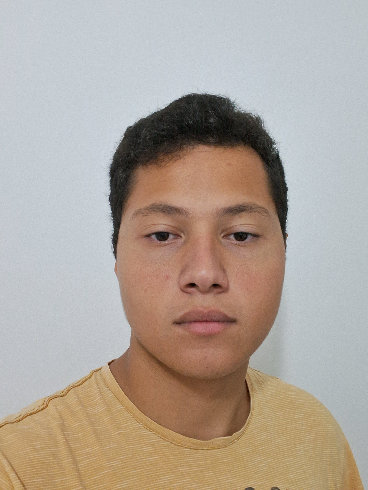

Descubra sobre a infraestrutura da ETEC de Hortolândia
As páginas a seguir interligam a ODS 4, que visa proporcionar à todos uma educação de qualidade,com a infraestrutura presente na nossa ETEC
.png)
As páginas a seguir interligam a ODS 4, que visa proporcionar à todos uma educação de qualidade,com a infraestrutura presente na nossa ETEC
Infraestrutura refere-se ao conjunto de elementos e serviços que suportam a operação e o desenvolvimento de uma sociedade ou economia. Isso inclui redes de transporte (estradas, ferrovias, aeroportos), serviços de utilidade pública (água, energia, saneamento), comunicações (internet, telefonia) e instalações públicas (escolas, hospitais). Uma infraestrutura adequada é essencial para o crescimento econômico, a mobilidade, a qualidade de vida e o acesso a serviços essenciais.
A ETEC de Hortolândia, administrada pelo Centro Paula Souza, se destaca na oferta de educação técnica e profissionalizante na região. A instituição oferece cursos integrados ao ensino médio, como administração, desenvolvimento de sistemas e nutrição, com o objetivo de preparar os alunos para o mercado de trabalho, e também desenvolver habilidades essenciais, como pensamento crítico e resolução de problemas. Além disso, a ETEC é reconhecida pelos altos índices de aprovações em universidades de prestígio da região, evidenciando a qualidade de sua formação.
O que a ODS 4 promove?
O que são problemas de infraestrutura?
Como se relacionam?
Exemplos positivos e negativos
Soluções
Palestras para conscientizar os alunos a preservar o patrimônio da escola.
Buscar ajuda de investidores, patrocinadores e da comunidade para arrecadar fundo para a solução do problema.
Criação de um forum, onde os alunos possam contatar diretamente a administração.
Sobre o projeto
O projeto "Tecnologia na construção de um mundo sustentável" se caracteriza como uma avaliação multidisciplinar que relaciona as disciplinas de Programação Web, Análise e Projeto de Sistemas e Banco de Dados, por meio de um site que visa resolver os problemas relacionados a ODS (Objetivos de Desenvolvimento Sustentavel) dentro do contexto escolar. A matéria de APS foi responsável pela divisão e categorização de tarefas dos membros, alem da orientação por parte da professora. A matéria de PW foi responsável por toda a parte técnica do projeto, tanto a criação da parte visual quanto a estrutural do site. A matéria de BD foi responsável pela criação do Banco de Dados que o site armazena.
Objetivo Geral
Assegurar a educação inclusiva e equitativa e de qualidade, e promover oportunidades de aprendizagem ao longo da vida para todas e todos
Objetivo Especifico
Construir e melhorar instalações físicas para educação, apropriadas para crianças e sensíveis às deficiências e ao gênero, e que proporcionem ambientes de aprendizagem seguros e não violentos, inclusivos e eficazes para todos
|
João Pedro-Líder |
Mateus Facchini-Analista |

Higor-Back-End |
Bruno-Front-End |
Ferndanda Hellen de Sousa-Profª. Esp. em Gestão Escolar e de Projeto |
Priscila Batista Martins-Profª Esp. Informática e Educação |
Célia Aparecida Barufaldi-Profª. Esp. em Análise de Sistemas e EAD |
Samuel dos Santos Prof°. Esp. em Ciência de Dados |
A Etec se destaca pela excelência em infraestrutura educacional, resultado de investimentos governamentais e uma visão estratégica da direção. Seus laboratórios modernos, salas de aula confortáveis e uma biblioteca bem equipada criam um ambiente ideal para aprendizado. A acessibilidade e instalações esportivas promovem saúde e bem-estar. A manutenção constante reflete o compromisso com a qualidade, enquanto parcerias com empresas enriquecem a experiência dos alunos. Assim, a Etec é um ecossistema de crescimento, inovação e realização, preparado para o futuro dos jovens.